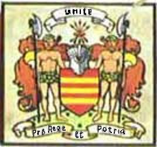

Oran Do Dhomhnull Ban Mac Dhomhnuill Dhuibh, Tighearna Loch Iall
Le Alasdair Camshron
A Song to Donald Ban Son of Donald Dubh, Laird of Lochiel
Chant pour Donald Ban, fils de Donald Dubh, Seigneur de Lochiel
by/par Alexander Cameron of Dochanassie (? - 1788)
Tune: Oran do Loch Iall(Source: CD "Glenfinnan - Songs of the '45'" by Capercaillie)
Sequenced by Christian Souchon (c) 2006


|
A SONG TO LOCHIEL
1. Here’s a health to my hero Tis right full to fill it And to keep it in practice As truly a fashion; Every man who dislikes it I shall leave him a-thirsting To drink it were pleasant In wine or in brandy So pleasant, so pleasant. 2. If it's good fiery brandy, Bring it down now to see it, I would hold up a quaich full In front of my forehead; Ill becomes it to comrades Not to love one another, To all whom it pleases- Here's a health to the Rebels! Here's a health, here's a health! 3. Young (3) Donald from Lochaber (4) Thy health may I see drunk around me, The youth faithful, commanding And in danger unflinching; Little wonder that pride shines So high in thy visage, While so much blood royal Does run by thy shoulders. Blood royal, blood royal 4. For indeed much blood fruitful Does course 'neath thy clothing, From Manus Mac Cairbre's (5) Race, well-armed and valiant; With their spotted double targets And their strong coats of armour, When they charged in the onset, Retreat did they never. When they charged, when they charged! 5. And thy kinsmen are many To be seen here in Scotland, To Sleat thou'rt related And the young heir of Dreòllainn , To Mac Shim of the banners In need's hour not faint-hearted, And young Ewen of Cluny And his folk would rise with thee. They would rise, they would rise! 6. The Marquis of Enzie And Perth's Duke would rise with thee, And likewise Clan Chattan With their blue, keen-edged weapons, Mac Mhic Ranald of Keppoch With his clean-limbed, brave clansmen, And Mac Iain Stewart of Appin A chieftain unyielding. Unyielding, unyielding! 7. Of thy clansmen thou'rt certain Wherever thou goest, Pity whom meets their anger, In need's hour they're not timid; Well-armed, equipped, loyal, Unaccustomed to yielding, And the sound of their firing Would leave their foes prostrate. O, the sound of their firing! 8. It was shown at Gladsmuir(1) Thou excelledst in valour, Thy spirit tookst from thy grandsire Who of hosts was commander; And my hope's in the Trinity, If this thing come to triumph, I'll see thee win a Dukedom When that crown has been gained. A Dukedom! A Dukedom! 9. At Falkirk, 'gainst Hawley,(2) Thou didst excel all his army, When the enemy turned In six ranks on the hillside; Thou flinchedst not from the danger With thy ancestor's courage, When thy clan drew together The beasts took to fleeing. To fleeing, to fleeing! 10. Nor did that coward rabble(2) Take to fleeing in safety, For many a red-coat Lay on the field headless, And arms from their shoulders And crown off were stricken, By the keen, mighty heroes Haughty, and fearless. And fearless, and fearless! 11. Woe betide him who would thwart them Aflame for the battle, With my loved one a-leading, A champion in the fighting; Whene'er thy banner was raisèd By the fine fearless heroes, Their strong arms a-striking Would leave Englishmen lifeless. Their strong arms, their strong arms, Their strong arms, Their strong arms. Translated by John Lorne Campbell in "Highland Songs of the '45" (1932) |
ORAN DO LOCH IALL
1. 0 deoch-slainte mo ghaisgich, 'S coir a faicinn 'ga lionadh, Us a cumail an cleachdadh Mar fasan da rireadh; H-uile fear leis nach ait i F'agam esan an iotadh; Bhith 'ga h-ol gur h-e b'annsa Ma's branndaidh no fion i Gur h-e b'annsa, gur h-e b'annsa. 2. Ma's branndaidh maith cruaidh i Druid a nuas i 'ga feuchainn, 'S gun cuirinn lan cuaich dhith A suas fo chlar m'eudainn; 'S olc an obair do chàirdean Bhith mi-ghràdhach do cheile, 'S a h-uile fear leis an aill i- So deoch-slainte nan Reubal! Deoch-slainte, deoch-slainte. 3. 'S a Dhomhnuill oig (3) Abraich (4), Do shlainte gum faic mi mun'n cuairt i; An t-og firinneach smachdail Nach robh tais an am cruadail; 'S beag iongnadh an t-ardan Bhith gu h-ard ann ad ghruaidhean, 'S a liuthad fuil rioghail Tha sioladh mu d'ghuaillibh. Fuil rioghail, fuil rioghail 4. Gur l1onmhor fuil fhrasach Th' air a pasgadh fo d' leine, 0 shliochd Mhanllis Mhic Chairbre Bha gu h-armailteach treubhach; Le sgiathaibh breac dubailt Us le 'n luirichean treuna, An am dhoibh dol anns an iomairt Cha b'e ti11eadh bu bheus doibh. An am dhoibh dol anns an iomairt. 5. Gur l1onmhor do chairdean Ann an Albainn r'am feuchainn, 'S car' thu d'oighre na Dreo11ainn 'S do Shir Domhnull a Sleibhte, Do Mhac Shimidh nam bratach Nach robh tais an am feuma, Dh'eireadh Eoghan og Chluainidh 'S a shlua.gh leat gun euradh. 'S a shlua.gh leat gun euradh. 6. Gun eireadh Diuc Pheairt leat 'S ard-Mharcus na h-Einne, Mar sud is Clann Chatain Le 'n glas-lannaibh geura, Mac Mhic Raghnaill na Ceapaich Le 'phrasgan glan treubhach, 'S Mac lain Stiubhart o'n Apuinn, Ceannaird feachd e nach gei11eadh. Ceannaird feachd e nach gei11eadh. 7. 'S tha thu cinnteach ad chinneadh Anns gach ionad an teid thu, 'S mairg dh'fheuchadh an ascaoin', Cha bu tais an am feum' iad; Gu h-armach acfhuinneach rioghail, 'S cha n-e striochdadh bu bheus doibh, 'S le farum an lamhaich Gum biodh an naimhdean gun eirigh. Gum biodh an naimhdean gun eirigh. 8. 'S dearbhadh air sin Sliabh a' Chlamhain Gun d'fhuair sibh barrachd an cruadal, Thug thu an duthchas o d'sheanair, B'ard-cheannard air sluagh e; Tha mo dhuil anns an Trianaid, Ma's ni thig gu buaidh e, Gum faic mi thu ad Dhiuca An deidh an crun ud a bhuannachd. 'is ‘nad Dhiuc', 'is ‘nad Dhiuc’ 9. La na h-Eaglais' bh'aig Halaidh Thug sibh barr air a bhuidhinn, 'N uair a thionndaidh na naimhdean 'Nan sia rancan 'sa bhruthach; Dhuit cha b'iomrall an cruadal, Ghlac thu an dualchas bu chubhaidh, 'N uair theann do chinneadh r'a cheile Ghabh na beistean mu shiubhal. Ghabh na beistean mu shiubhal. 10. Cha b'e siubhal na slainte(2) Bh'aig a' ghraisg us a'teicheadh, 'S iomadh cota ruadh maduir Bh'anns an araich gun leithcheann, Agus slinnein o'n ghualainn Agus cnuac chaidh a leagail Le luths nam fear laidir Ghabh an t-ardan gun eagal. Le luths nam fear, le luths nam fear 11. 'S mairg a tharladh riu crasgach An am tachairt ri namhaid, '8 mo ghaol-sa air an taiseach, Craobh-chasgairt a' bhlair thu; 'N uair a thogte do bhratach Le fir ghasda neo-sgathach, 'S ann le luths ur gairdein Bhiodh luchd Beurla anns an araich. Anns an araich, anns an araich Anns an araich, anns an araich... |
CHANT POUR LOCHIEL
1. A la santé du héros Il convient d'emplir son verre. Que chacun ici révère L'usage antique si beau! Qui ne penserait de même Reste gosier languissant! Mais tous les autres, qu'ils viennent: Un pur nectar les attend. Les attend, les attend. 2. Si ce brandy est ardent. Goûtons-le, point de mystère, Et je porterai mon verre Plein à ras-bord, à mon front; Comment entre camarades Peut-on ne point s'entr'aimer? A chacun une rasade Et trinquons aux Révoltés! Et trinquons aux Révoltés! 3. Jeune (3) Fils de Lochaber(4) A toi buvons à la ronde, Le chef à la tête blonde Qui ne fuis point le danger! De fierté ton âme est pleine Nul ne s'en étonnera Le sang royal en tes veines Confère force à ton bras. A ton bras, a ton bras! 4. Qu'il est fertile le sang Dont s'abreuve ta stature. C'est la race brave et dure Que Manus Mac Cairbre (5) enta. Blason semant l'épouvante, Avec ses champs alternés Point de retraite infamante. On le vit toujours charger, Et charger, et charger! 5. Uni par les liens du sang, A l'Ecosse toute entière A Sleat tu trouves des frères, Comme à l'île de Dreòllainn ; Mac Shimi , dont les bannières A ton secours accourraient, Ewen de Cluny lui-même Avec les siens te suivrait. Te suivrait, te suivrait 6. Duc de Perth , Marquis d'Enzie Tous te suivraient à la guerre, Le Clan Chattan , solidaire T'accorderait son appui. Ranald de Keppoch sans doute Dont les hommes frappent dru; Stewart d'Appin qu'en déroute, Personne n'a jamais vu. Jamais vu, jamais vu. 7. Et ton clan qui te suivra Où que tu ailles, fidèle Plaignons ceux qu'en route il hèle, Pour les soumettre à sa loi; Et s'ils abhorrent les fourbes, Qui les vit jamais s'enfuir? Dès qu'ils font parler la poudre L'ennemi pense mourir. L'ennemi, l'ennemi 8. Si tu fis preuve à Gladsmuir(1) D'une énergie singulière, Tu la tiens de ton grand-père Un célèbre commandeur. La Trinité, je l'espère, Te voudra vainqueur encor, Que, devenu Duc, tu rendes Au Roi sa couronne d'or. Au vrai Roi, au vrai Roi! 9. A Falkirk, face à Hawley,(2) On a vu tourner casaque Un ennemi dont l'attaque Sur six rangs couvrait le mont; Tu dédaignais la menace Comme les tiens, courageux, Tandis que vidait la place Un ramassis de peureux. De peureux, de peureux 10. On vit courir aux abris En vain cette piètre foule (2), Bientôt les Tuniques Rouges Gisaient mutilées, sans vie. On leur trancha bras et tête. Plus d'un eut le chef brisé Par d'héroïques athlètes Qu'on n'a jamais vu trembler. Jamais peur, jamais peur! 11. S'ils frappent, ivres de feu, Malheur à qui leur résiste Quand mon idole les guide, Et combat au milieu d'eux; Quand ces guerriers impavides L'étendard haut ont levé , On voit sous leurs coups, livides Tomber sans vie les Anglais. Les Anglais, les Anglais, Les Anglais, les Anglais! (Trad. Ch.Souchon (c) 2009) |
|
Of
Alexander Cameron
from Dochanassie in Lochaber, very little is known beyond the fact that he was appointed bard to the Highland and Agricultural Society in 1787 and died in the following year. Only 3 or 4 of his poems have been published, but as in 1787 the Society recommended the purchase of his MS, others may still be in existence. (source: Patrick Turner's collection, 1813, quoted by J.L. Campbell)
"With references to the battles of Gladsmuir (Prestonpans - September 21, 1745) (1) and Falkirk (January 17, 1746) (2) but no mention of the battle of Culloden (April 16, 1746) the author must have written this work sometime within a three month "window." Due to the positive tone at this composition's end, it is highly doubtful that he wrote this on or after February 1st, since the retreat to the Highlands began that day and many soldiers were disillusioned and "struck with amazement." Many even left their regiments at this time and headed to their homes. Therefore, this work is dated to late January, 1746, during the two weeks that followed the battle, when the men of Lochiel had secured the town of Falkirk and were encamped with their fellow Jacobites awaiting their next commands."
Source: The Clan Cameron Archives
(3) John Cameron, the father of Donald was obliged to escape for France, for having taken share in the rising of 1715. In consequence of his attainder, his son succeede to the Cameron estates and chieftainship. On account of his father being still alive, he was commonly called "Young Lochiel", though he was of mature age when he began to fight. (4) Lochaber is the area around Fort William and Ben Nevis and the homeland of Clan Ranald of that ilk , McDonalds of Keppoch and Camerons. (5) Manus McCairbre: one of the several mythic ancestors ascribed to Clan Cameron: maybe the ancestor of the McManus, a branch of the O'Conors descended from an ancient King of Ireland. |
On ne sait pas grand chose au sujet de
Alexandre Cameron
de Dochanassie à Lochaber, si ce n'est qu'il fut nommé barde à la Highland and Agricultural Society en 1787 et qu'il mourut l'année suivante. Seuls 3 ou 4 de ses poèmes ont été publiés, mais comme, en 1787, la Société Agricole des Highlands recommandait l'achat de son manuscrit, on peut supposer qu'il en existe d'autres. (source: Recueil de Patrick Turner 1813, cité pae JL Campbell)
"Puisqu'il se réfère aux batailles de Gladsmuir (Prestonpans - 21 septembre 1745) (1)et Falkirk (17 Janvier 1746) (2), sans mentionner celle de Culloden (16 avril 1746), l'auteur doit avoir composé ce poème dans le "créneau" de 3 mois qui sépare ces deux dernières batailles. La note positive qui conclut sa composition permet d'en dater la rédaction à compter du premier février, date à laquelle débuta la retraite vers les Highlands qui causa l'étonnement et la déception de plus d'un soldat. Beaucoup allèrent même jusqu'à quitter leur régiment pour rentrer chez eux. C'et pourquoi, on date ce texte de fin janvier 1746, et plus précisément des deux semaines qui suivirent la bataille, lorsque les hommes de Lochiel pour consolider la prise de Falkirk s'y installèrent avec les autres Jacobites dans l'attente de nouveaux ordres."
Source: Thasglann Chloinn Chamshroin
(3) John Cameron, le père de Donald fut obligé de se réfugier en France, du fait de sa participation au soulèvement de 1715. Il fut déchu de ses droits et c'est son fils qui lui succéda dans les possessions et à la tête du Clan Cameron. Comme son père était encore en vie,on l'appelait souvent "le jeune Lochiel", bien qu'il ait reçu le baptème du feu à l'âge mur. (4) Lochaber est la région qui entoure Fort William et le Ben Nevis et le pays d'origine des Clans ClanRanald de Lochaber , McDonald de Keppoch et Cameron. (5) Manus McCairbre est l'un des multiples ancêtres mythiques attribués au Clan Cameron: peut-être s'agit-il de l'ancêtre des McManus, une branche des O'Conor qui descendent d'un antique Roi d'Irlande. |
|
CHIEF DONALD CAMERON OF LOCHIEL (1695-1748) whose name has descended to us under the title of "
the gentle Lochiel
" is considered as the fairest type of those men who threw a chivalrous and romantic lustre over Jacobite devotedness. His father John was attainted and obliged to escape to France. Donald succeeded to the estates of his ancestors and the chieftainship of the clan while his father was still alive, so that he was commonly called "young Lochiel".
The clan Cameron was both numerous and powerful. and the grandfather, the father of Donald and Donald himself had been steadfast supporters of the Stuarts. That is why the young Pretender, when he landed at Moidart, informed him at once of his arrival and his purposes. Donald sent his brother to try to dissuade him from this dangerous enterprise. Charles could not do without the co-operation of Lochiel and requested a personal interview with him at Borodale. Lochiel was advised by his brother not to comply with that invitation: "Brother, I know you better than you know yourself. If this prince sets eyes upon you, he will make you whatever he pleases".
The prediction was verified. Lochiel stated that Charles had come without the promised supplies in men and money. Thus the Highland chiefs were released from any engagement towards him. He advised him to return to France and wait for a more favourable opportunity.
The BoroDALE (Moidart) interview is mentioned in the 3d verse of the song
"Oh, he's be long o'coming"
:
|
Le CHEF DONALD CAMERON DE LOCHIEL (1695-1748) dont le nom nous est parvenu sous la forme de "
Lochiel le Gentilhomme
" est considéré comme l'exemple le plus pur de ces hommes qui donnèrent à la dévotion à la cause Jacobite une coloration éclatante, à la fois chevaleresque et romantique. Donald hérita, du vivant de son père, des terres ancestrales et du titre de chef du clan, ce qui lui valut d'être longtemps appelé, "le Jeune Lochiel".
Le Clan Cameron était nombreux et puissant et le grand-père, le père de Donald et Donald lui-même avaient été de solides partisans des Stuart. C'est pourquoi, le Jeune Prétendant, lorsqu'il accosta à Moidart, l'informa aussitôt de son arrivée et de ses intentions. Donald envoya son frère essayer de le dissuader de cette dangereuse entreprise. Charles ne pouvait se passer de l'aide de Lochiel et demanda à avoir un entretien en tête à tête avec lui à Borodale. Le frère de Lochiel invita vivement celui-ci à ne pas déférer à cette invite: "Mon frère, je vous connais mieux que vous ne vous connaissez vous-même. Dès que ce prince vous aura regardé, il fera de vous ce qu'il voudra." Cette prédiction se vérifia. Lochiel déclara que, puisque Charles était venu sans les réserves en hommes et en argent qui étaient promises, les chefs des Highlands étaient dégagés de toute obligation envers lui. Il lui conseilla de retourner en France et d'attendre une occasion plus favorable. Le Prince répondit qu'une opportunité comme la situation présente, dans laquelle la plupart des troupes britanniques étaient parties à l'étranger, ne se reproduirait pas de sitôt et que quelques succès initiaux lui assureraient le soutien de ses alliés tant à l'étranger qu'en Grande Bretagne. Lochiel conseilla une solution intermédiaire: que le Prince reste caché dans les Highlands jusqu'à ce que les Français puissent envoyer une armée à son aide. Charles rejeta cette proposition en déclarant que la Cour de France ne ferait rien tant qu'une insurrection n'aurait pas effectivement commencé. Lochiel supplia Charles de rester à Borodale jusqu'à ce qu'une réunion des chefs de clans ait pu avoir lieu pour décider ce qu'il convenait de faire. Charles refusa avec indignation: "Je vais dresser l'étendard royal...Lochiel...peut rester chez lui et connaître par les journaux quel sera le destin de son prince." Son honneur ainsi piqué à vif, le chef magnanime s'écria: "Non, je partagerai le destin de mon prince et ainsi feront tous ceux sur qui la nature ou la fortune m'ont donné d'avoir quelque autorité!". C'est ainsi que Lochiel bascula et devint captif de sa propre parole. Sans son exemple et son influence, cette guerre civile n'aurait pas pu commencer ou du moins se serait achevée par une escarmouche sans conséquence.
L'entrevue de BoroDALE (Moidart) est mentionnée dans le chant
"Oh, he's be long o'coming"
.
|